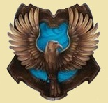

Examen de Historia de la Magia en Inglaterra
1.Escribe el nombre de la casa de Hogwarts que representan los siguientes escudos:

2. Marca los rasgos de cada casa (dos de cada uno):
*Es necesario mantener pulsado "Ctrl" cada vez que se selecciona o se quita la selección
Ambición
Auto-preservación
Caballerosidad
Dedicación
Ingenio
Inteligencia
Lealtad
Valor
Ambición
Auto-preservación
Caballerosidad
Dedicación
Ingenio
Inteligencia
Lealtad
Valor
Ambición
Auto-preservación
Caballerosidad
Dedicación
Ingenio
Inteligencia
Lealtad
Valor
Ambición
Auto-preservación
Caballerosidad
Dedicación
Ingenio
Inteligencia
Lealtad
Valor
3. ¿Quién impulsó la aceptación de muggles en Hogwarts?
Godric Gryffindor
Helga Huffelpuff
Rowena Ravenclaw
Salazar Slytherin
4. ¿Quién es conocida como la 'Dama Gris'?
5. ¿Entre qué años se desarrolló la I Guerra Mágica?
1940 - 1970
1979 - 1981
1995 - 1998
1970 - 1981
6. ¿Cuáles de los siguientes magos formaron parte de la Orden del Fénix?
Alice Longbottom
Peter Pettigrew
Lucius Malfoy
Alecto Carrow
Sirius Black
Severus Snape
Dolores Umbridge
James Potter
7. ¿Quién ocupa el cargo de Ministro de Magia en 1996 tras la dimisión de Cornelius Oswald Fudge?
Kingsley Shackelbolt
Rufus Scrimgeour
Albus Dumbledore
Pius Ticknesse
8. ¿Dónde y cuándo terminó la II Guerra Mágica?
Batalla sobre Little Whinging 1970
Batalla de Hogsmeade 1975
Batalla del Ministerio de Magia 1997
Batalla de Hogwarts mayo de 1998
9. Selecciona los magos que han entrado en el Club de las Eminencias o "Slug Club":
*Es necesario mantener pulsado "Ctrl" cada vez que se selecciona o se quita la selección
Albus Dumbledore
Regulus Black
Tom Riddle
Sybill Trelawney
Severus Snape
Lily Evans
Neville Longbottom
Cedric Diggory
Marcus Belby
Hermione Granger
Cho Chang
Hestia Carrow
10. ¿Quién escribio 'Historia de la Magia'?
Gaspard Shingleton
Cuthbert Binns
Gilderoy Lockhart
Bathilda Bagshot
Artemisia Lufkin